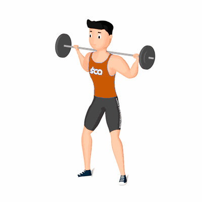

Agachamento Sumô com Barra Livre

O exercício trabalha o fortalecimento e hipertrofia dos músculos inferiores, com ênfase nos músculos adutores da coxa.
Ficha Técnica
Tipo: Musculação
Grupo Muscular: Perna
Aparelho: Nenhum
Músculos: Nenhum
Como realizar
- Pegue uma barra e coloque nas costas na região do trapézio;
- Posicionar os pés um pouco mais afastados das linhas dos quadris e levemente apontados para fora;
- Realiza a flexão de joelho até o ângulo de 90 graus. Lembrando que a coluna deve permanecer ereta durante todo o movimento e os pés devem sempre estar alinhados com os joelhos;
- Realizar lentamente a extensão dos joelhos até estar de pé novamente e de volta a posição inicial.
 RC STORE
RC STORE